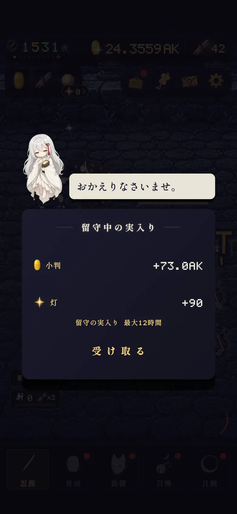
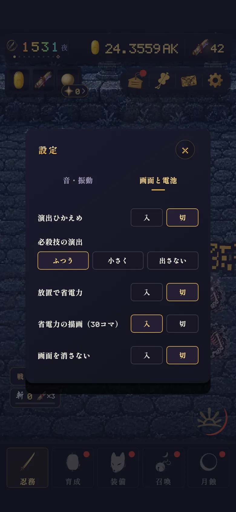
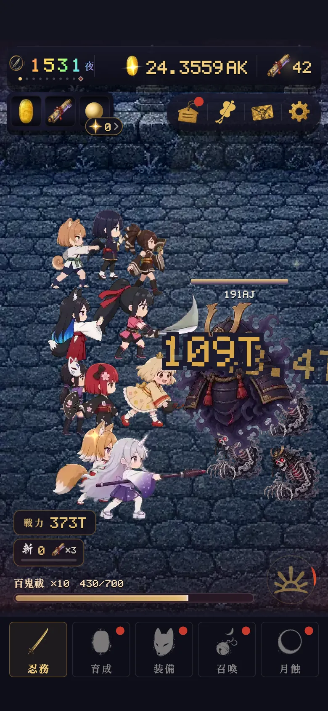
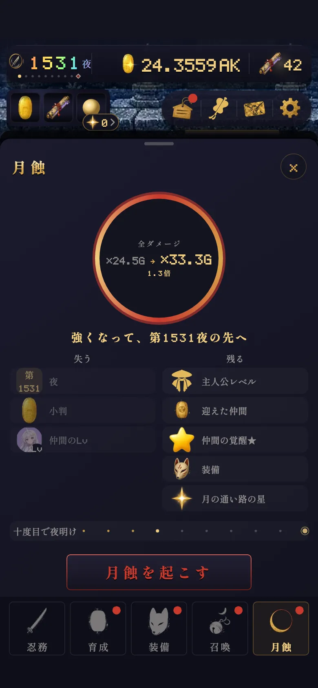
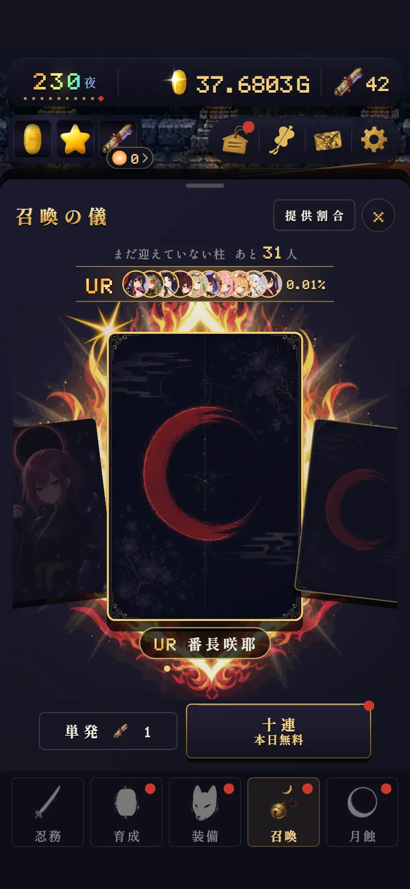
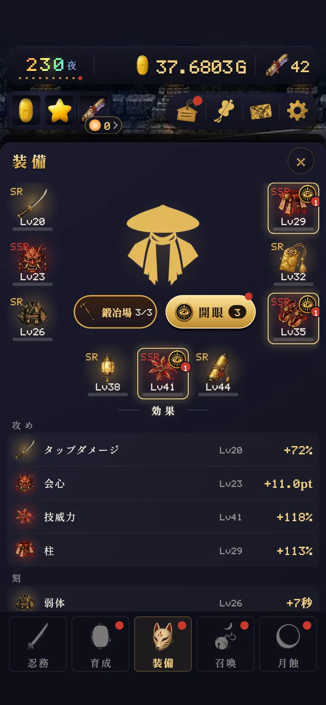
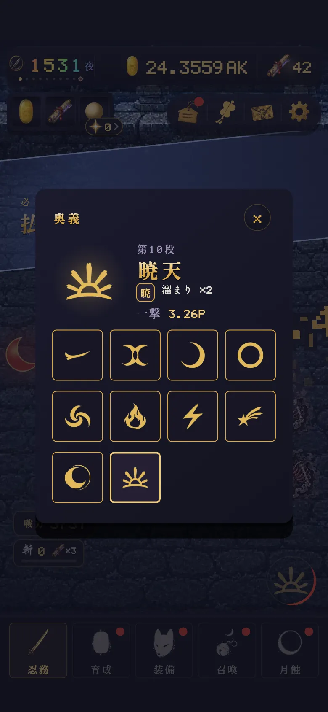

第2000夜の越え方 早い人のやり方
最終更新:
先に答え
この頁の言葉
先に、よく出てくる言葉をそろえておきます。
| 言葉 | 意味 |
|---|---|
| 夜 | 今いる場所。画面の左上に出ている数字です。 |
| 最深 | 今の巡り（前の月蝕から今まで）で、いちばん深く進んだ夜。「前の最深」は、これまでに月蝕したなかでいちばん深い夜のことです。 |
| 月蝕 | 夜を第1夜に戻すかわりに、全ダメージがずっと上がる仕組み。下の「月蝕」から起こします。 |
| 蝕片 | 月蝕でもらえる力のもと。画面には数として出ませんが、月蝕の盆の「全ダメージ ×◯」に入っています。 |
| 暁 | 前の最深を越える月蝕を10回するごとに来る、夜明けのごほうび。 |
| 大祓 | 叩き続けると始まる、斬撃が何倍にもなる時間。 |
番付の記録
番付には、その月にいちばん深く進んだ夜と、暁の数が届きます。2026-10-03 15:16の時点で記録のある121台の端末を、名前を伏せて数えました（この頁の「人」は端末1台を1人として数えています）。
| 暁の数 | 越えた人 | 手前の人 |
|---|---|---|
| 第1500夜の記録が届いたとき | 2つ | 1つ |
| いま | 5つ | 1つ |
数はどれも真ん中の人の値です。「越えた人」は第2000夜を越えた7人、「手前の人」は第1500〜1999夜にいる22人。
- 日数は、起点の日から、第2000夜以上の記録が初めて届いた日まで。起点は「番付に登録した日」「最初の記録が届いた日」「届いた夜の深さから見積もった日」のうち、いちばん早い日です。実際に遊び始めた日とは限りません。
- 暁の数は、記録が届いたときのものです。月蝕の回数そのものは番付に届かないので、暁から「少なくとも何回」と読んでいます。
- 番付からわかるのはここまでで、叩いた回数や遊んだ時間は届きません。その先は運営の計測で補います。
開いているあいだだけ進む
アプリを閉じているあいだ（留守）は、夜は進みません。戻ってきたときに受け取れるのは、小判・灯・落とし物だけです。

12- 1留守のあいだに貯まった小判と灯。夜の数は増えていない
- 2夜は、閉じる前と同じ第1531夜のまま
夜を進めるのは、画面を開いている時間です。眺めているあいだに画面が暗くならないよう、設定で「画面を消さない」を入にできます。

123- 1右上の歯車で設定を開く
- 2「画面と電池」を押す
- 3「画面を消さない」を入にする
どれも「3分止まったら月蝕」の同じ遊び方で、違うのは叩き方だけです。開いていても叩かないと、4日目で第1520夜でした。
叩いて大祓
叩き続けると「大祓」が始まり、斬撃が何倍にもなります。叩けば叩くほど段が上がります。ここの回数や秒数は、強化していないときの基本の値です（月の通い路や装備で、時間がのびたり、始まるまでの回数が減ったりします）。

12- 1今の段と倍率（百鬼祓 ×10）。数字は「今の回数／次の段までの回数」
- 2奥義の札。光ったら押す。長押しで奥義の画面が開く
- 効いた斬撃が基本150回たまると大祓が始まり、斬撃が×5になります。
- 残り時間は基本15秒。何もしないと1秒に1秒ずつ減り、叩くと1回ごとに0.1秒戻ります。段が上がると、また満タンに戻ります。
- 1秒に8回ほど叩けば、いちばん上の月蝕祓まで届きます。指を当てたままの長押しでも1秒に8回出るので届きます。
- 月蝕祓になると、叩いても時間はもう延びません。大祓ぜんたいでも150秒までです。
- 大妖との戦いでは×10まで。大祓が終わると、3分は次の大祓がたまりません。
- 空に月の欠片が漂ったら触れてください。基本30秒のあいだ、タップが×3になります。
月蝕を押すところ

12345- 1全ダメージが「今 → 月蝕のあと」で何倍になるか
- 2失うもの（夜・小判・なかまのLv）
- 3残るもの
- 4次の暁までの点。点が10つたまると暁
- 5月蝕を起こす
押すまでの流れ
- 1
前の最深より先の、大妖の夜まで進む
押せるのは、前の最深より先の大妖の夜（10の倍数の夜）から。前の最深が第1510夜なら、第1520夜からです。
- 2
進みが止まったら押す
最深がしばらく伸びなくなったら押しどき。長く遊ぶ人は3分、1日30分ほどの人は10分が目安です（短い人が早く押しすぎると、戻り道に時間を使ってしまうため）。
- 3
押す前に、小判を鍛錬に使い切る
下の「育成」を開き、「隊を鍛錬」で小判を使ってから月蝕します。小判は月蝕で0になります。なかまのLvは、暁の「持ち越し」の分だけ残ります（暁）。
- 4
月蝕のあとは自動で先へ
なかまの強さに見合う夜まで、自動で飛ばして進みます（いちばん先でも月蝕した夜の80%まで）。そこから叩いて、前の最深を越えにいきます。
細かく重ねると何がいいか
月蝕でもらえる蝕片は、月蝕のたびに足し算で貯まります。同じ夜にたどり着いたとしても、少しずつ何度も月蝕してきた人のほうが、貯まった蝕片は多くなります。
さらに、前の最深を越えた月蝕には絵巻3枚と灯75が付き、10回ごとの暁では絵巻5枚が付きます。前の最深を越える月蝕を50回すれば、絵巻だけで175枚です。
- 画面を開いたまま30分、最深が伸びないと、押せる夜が「前の最深の約九割」まで下がります（九割の月蝕・押せる夜）。ただし前の最深を越えずに起こした月蝕には、暁・絵巻・灯は付きません（蝕片は入ります）。詰まりをほどく手で、重ねても暁は増えません。
- 細かく重ねると蝕片は増えます。ただ、運営の計測では、これだけで大きく差がつくわけではありませんでした。いちばん効くのは、開いて叩いている時間です。
蝕片の合計の式（ひらく）
毎日のこと
時間に関係なくもらえるものは、毎日取りこぼさないのがいちばんの近道です。

1- 1十連。始めた日から30日は毎日1回無料（繰り越しなし）

12- 1鍛冶場。1日3回、装備のLvを上げられる
- 2開眼。できる数が出ていたら選ぶ

12- 1今使っている奥義
- 2奥義の段。右下ほど新しく強い
- 依頼の3題を済ませると絵巻2枚。
- 奥義は、新しい段が開くと、次に溜め始めたときに自動で持ち替わります。ただし、この画面で古い段を自分で選ぶと、その段のままになります。選んだ覚えがあれば、いちばん新しい段を選び直してください。
第2000夜の坂
妖の体力は、第2000夜までは1夜ごとに×1.1、その先は×1.06で増えます。第2000夜の手前がいちばんきつい坂で、第1500夜あたりから進みが重くなるのはこのためです。越えると登りはゆるみます。
坂を越える助けになるのは、次のような「一度で効く掛け算」です。
| 掛け算 | 効き目 |
|---|---|
| 新しいなかま | 開始組のほかのなかまを1人迎えるごとに、隊の力が ×1.6（R）〜×3.2（UR） |
| 夜の属性 | その夜に克つなかまは ×1.3、克たれるなかまは ×0.85。隊を「おまかせ」にしておけば、属性が替わる10夜ごとに自動で組み直します |
| 月蝕の重ね | 貯まった蝕片（上の図） |
| 装備 | 帯＝なかまの力、巻物＝蝕片、刀＝タップ |
遊ぶ時間ごとの見込み
| 遊び方 | 7日目 | 30日目 | 90日目 |
|---|---|---|---|
| 10分/日 | 860 | 1660 | 2200 |
| 30分/日 | 1290 | 1800 | 2870 |
| 3時間/日 | 1710 | 2800 | 3850 |
| 一日中 | 3180 | 4020 | — |
数は届いた夜（運営の計測・2026年9月30日の仕様）。どの行も、遊ぶあいだは叩き、無料十連・日次・鍛冶場・開眼も使った計測。1日30分は10分×3回。数は10回試した真ん中あたり（小さい方から6番目）、一日中は3回の真ん中。1日30分なら30日目で第1800夜、90日目で第2870夜ほどが目安です。
召喚の運でも差がつきます。同じ遊び方でも、1日3時間・30日目は第2030〜3130夜と幅がありました。
一日の回し方
- 1
開いたら、毎日のぶんを受け取る
無料の十連・依頼・鍛冶場3回。
- 2
遊ぶあいだは叩く
指か長押しで大祓を回す。月の欠片が出たら触れる。奥義の札が光ったら押す。
- 3
前の最深を越えて止まったら月蝕
長く遊ぶ人は3分、1日30分ほどの人は10分が目安。押す前に小判を鍛錬に使い切る。
- 4
閉じるときは留守に任せる
小判・灯・落とし物が貯まります（はじめは8時間まで。暁で延びる）。夜は進みません。